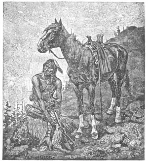
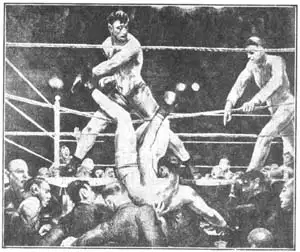
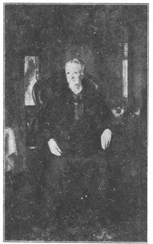

31
REAL–MEN ARTISTS
真正的男子汉画家

WHAT pictures do you like best? Do you like pictures of the Wild West? Pictures of the Indians with their horses and dogs and rolled–up tepees taking the trail to new hunting grounds? Pictures of cowboys with their six–shooters and lariats, riding the herd or roping broncos? Pictures of half–breed hunters with their fur caps and trusty rifles, making their way through a heavy snowstorm? Pictures of soldiers of the United States cavalry patrolling the Indian country to keep order and protect property?
Are these the kinds of pictures you like?
If they aren’t, I’ll be disappointed, for I like them very much. Even if they were painted by a poor painter, I’m afraid I’d like such pictures just because I can’t help liking Indians and cowboys and soldiers.
Luckily, there was an American artist who painted such pictures very well. His name was Frederick Remington. Frederick Remington didn’t sit home in a studio and ask Indians to come and pose for him. He went out to the Wild West and painted them as he saw them living their daily lives. He wasn’t a “sissy” painter. Even if Frederick Remington had never written books about his life in the cowboy country, we should know by his paintings that he had lived there among real cowboys and Indians.
At first Remington didn’t paint. He drew. For when he began to make pictures he was an illustrator. An illustrator’s job was to draw pictures in black and white for magazines anti books. He was something like a human camera, trained to put down on paper, with pen and ink, life in the West just as it was, so people in the East could know what it was like.
Often illustrators do not become great painters, and at first Remington wasn’t a great painter. When he began to paint with colors instead of simply drawing with pen or pencil, he showed the cowboys and Indians all right, but the colors he used were too bright and glaring. Of course on the plains and bad lands of the West the colors that he saw were really bright and glaring in the brilliant sunlight and clear atmosphere. Gradually, however, his pictures became better paintings as he learned to use the bright colors better. His later pictures are really fine paintings, I think, and not just brightly colored illustrations.
Frederick Remington didn’t paint the exciting happenings only, He liked to paint his Indians, for instance, as plain everyday Indian people and not to have them always dressed in feathers and warpaint. In other words, his pictures show us the real Indians, lazy or hard working, bad or good, dirty or clean, out hunting or at home on the reservation; and not just the picture book kind of Indians which you can see in a Wild West show or in the movies. His soldiers are not always dressed up for parade or marching forth to a stirring band, like picture book soldiers, but are real men, cooking their suppers over the camp–fire, guarding wagon trains, cleaning their horses. His cowboys are real cowboys working for their living, not just the sort of cowboys we see in the moving pictures. “Men with the bark on” is what Remington called these rough and ready men of the West.
And as for horses! Frederick Remington, let me tell you, could paint horses that werereal horses. People aren’t all alike. Neither are horses. Frederick Remington’s horses aren’t just picture book horses any more than his Indians are picture book Indians. Each horse is a special horse, different from any other horse. They are stupid or bright, wicked or gentle, lazy or full of life, just as real horses are.
Besides being a wonderful illustrator, a writer, and a good painter, Remington was a sculptor. He made statues of men on horseback that seem full of life and action. You can see one of these statues, a bronze cowboy on horseback, if you go to Philadelphia. It stands in Fairmount Park.

No.31-1 THE PONY OF THE NORTHERN ROCKIES（《落基山北的小马》）
REMINGTON（雷明顿 作）
So, if you want to see what the real Wild West was like, not so many years ago, get hold of a book illustrated by Frederick Remington. You’ll really enjoy the pictures.
Remington was an American painter who painted American people. So was a later painter named George Bellows. George Bellows also painted the kind of pictures I think you’ll like, only his pictures are of the eastern part of the country, especially in and about New York city. Bellows wasn’t a “sissy” any more than Remington. He was such a good baseball player on his college team that he almost became a professional ball player, but decided to be a painter instead. He always liked athletics.
Some of his pictures show men and boys in swimming along the New York waterfront, some are of polo games and some very well–known ones are of boxing matches. George Bellows painted other pictures of quieter subjects. He painted some fine pictures of old ladies and little girls.
He was an illustrator, too, as Remington was, but Bellows’s illustrations were made in a very different way. They were made first on smooth stone and then printed with ink on paper from the stone. This kind of picture is known as a lithograph. Bellows was an unusually fine lithographer. During the World War Bellows made a famous lithograph showing the English Red Cross nurse, Edith Cavell, who was shot by the enemy as a spy.
One of Bellows’s well–known paintings is of the boxing match between Dempsey and Firpo for the heavy–weight championship of the world. Firpo was a South American boxer who was very strong. He was called the Wild Bull of the Pampas because of his tremendous strength. Once in the match the Wild Bull knocked Dempsey right through the ropes and down into the laps of the people looking on. But this didn’t seem to damage Dempsey much, for he finally won the match. Bellows’s picture shows Dempsey sailing out of the ring after Firpo’s powerful punch. The picture is very dark in some places and very bright in others, because all the light was turned on the ring like a big ceiling spotlight on the stage. The picture shows how well Bellows could paint furious action.
Now you will also see that Bellows could paint a quiet picture. Look at the portrait of his mother, picture of his mother, is it? Yet the It isn’t very much like Whistler’s two mothers seem to be about the same age. Notice the dark and light in this picture. Bellows seemed to like to have some very dark parts and some very light parts in his paintings, and also in his lithographs.
If you are a boy, probably you will like the boxing pictures best. If you are a girl, perhaps you’ll like the quieter pictures that Bellows painted. Whichever kind you prefer you can find among the works of George Bellows.
George Bellows and Frederick Remington are just two of the many American artists that should be in a history book of art. I wish I could tell you about the other American painters, but to tell about them all would make this book very much too fat, and no one likes too fat a book.

No.31-2 DEMPSEY AND FIRPO（《邓普西和菲尔波》） BELLOWS（贝洛斯 作）
Courtesy of the Metropolitan Museum of Art
It would be fun to tell you of the artists who are still alive and painting pictures while you are growing up. I have hardly mentioned the wall paintings—mural paintings, we call them—that are being used more and more to decorate the rooms in new buildings of America. You remember those of Sargent in the Boston Public Library.

No.31-3 BELLOWS MOTHER（《贝洛斯的母亲》）BELLOWS（贝洛斯 作）
Courtesy of The University Prints
Almost every large city in the United States now has good mural paintings in some of its buildings. If you live in a city, try to find out where these mural paintings are and then go to see them. They are very interesting. When you learn the name of the artist who painted them, see how much you can learn about his other paintings and about him.
You can have fun on a rainy day making a scrap–book of American paintings and statues. Look for pictures of them in magazines and in advertisements. Often there are pictures of paintings there. American art isn’t mostly in the past. It’s being produced right now. along with new kinds of airplanes, automobiles, and sky–scrapers. Real artists are even painting pictures for magazine advertisements. Boys and girls like to collect things, and a collection you could be proud of would be a scrap–book of American Art. I know scrap–books are fun to make, because I’ve made them myself. I’m making one now. Try one, yourself, and get some fun out of all this art that is being produced in your country.
And, if you like real–men artists, don’t forget Remington and Bellows.
【中文阅读】
你最喜欢哪种画呢？你喜欢那些描画美国开拓时期西大荒的画吗？印第安人跨着马，带着狗，捆着圆锥帐篷迁往新猎场的画；西部牛仔手持六发式左轮手枪，带着套马索驱赶马群的画；混血猎人头戴皮帽，佩戴可信赖的来复枪穿越暴风雪的画；美国骑兵在印第安巡视，维持社会稳定，保护百姓财产安全的画。
你喜欢这些画吗？
如果你不喜欢，我会很失望，因为我非常喜欢。即使这些画出自某位蹩脚画家之手，恐怕我还是喜欢，因为我会情不自禁地喜欢印第安人、西部牛仔和战士。
幸运的是，有一位美国画家画了许多这类画，而且画的很棒。他名叫弗雷德里克·雷明顿。弗雷德里克·雷明顿不是坐在画室里，请印第安人来做他的模特。他走出家门，闯进西大荒，画他眼中印第安人的日常生活。他是一位没有“娘娘腔”的画家。虽然弗雷德里克·雷明顿从未写过书介绍他在牛仔之乡的经历，但从他的画中，我们完全可以看出他曾经跟真正的牛仔们和印第安人一起生活过。
一开始，雷明顿不用颜料，只画素描，因为他起初只画插图。插图画家的工作就是为杂志和书籍画黑白画。他像一部照相机，用笔墨在纸上记录下真实的西部生活，使东部的人们也能了解西部的生活。
插图画家通常不能成为大画家。一开始，雷明顿也并非很优秀。当他开始改用颜料不再仅仅用铅笔或钢笔时，他画中的西部牛仔和印第安人总算令人满意，只是用色太亮太耀眼了。当然，在西部平原和贫瘠的土地上，他看到的色彩在灿烂的阳光和清晰的大气下的确明亮耀眼。然而，他后来慢慢学会了更好地运用亮色，也就越画越好了。我觉得，他后来的画真的很棒，绝不仅仅是亮丽的彩色插图。
弗雷德里克·雷明顿的绘画不仅仅记录振奋人心的事件，他还喜欢描绘日常生活中普普通通的印第安人，而不总是画他们插羽毛披战袍的形象。换言之，他的画向我们展示了真实的印第安人，而不仅仅是在西大荒的表演或电影中看到的那些印第安人。他们有的懒惰，有的勤奋；有的邪恶，有的善良；有的肮脏，有的整洁；有的外出狩猎，有的在家休整。他画中的士兵也不像图画书中的士兵那样总是穿着盛装游行或跟随一个令人激情澎湃的乐队前进。他们是一群真真切切的人。他们在营火上做晚饭，守卫马车队，擦洗马匹。他画笔下的西部牛仔们都非常真切，都在为生活而劳作，并不像我们在电影中看到的那样。雷明顿把西部这群粗犷、蓄势待发的人们叫着“身披树皮者”。
至于马！让我告诉你，弗雷德里克·雷明顿画的马像真的一样。人各有不同，马也是如此。弗雷德里克·雷明顿笔下的马不是图画书中的马，正如他画中的印第安人不是图画书上的印第安人。每匹马在他的笔下都是独特的，它们像真马一样，有的迟钝，有的聪颖；有的淘气，有的温和；有的慵懒，有的充满活力。
雷明顿不仅是位出色的插图家、作家和优秀的画家，他还是个雕塑家。他喜欢雕刻那些骑在马背上的人们，他们看上去极富有活力和动感。如果去费城，就能看到这样的一尊雕像。那是一个马背上的西部牛仔铜像。它矗立在费尔蒙特公园。
所以，要是想知道美国开拓时期西大荒的真实样子，那就去找一本几年前刚出版的由弗雷德里克·雷明顿插图的书，真的，你会欣赏书中的图画。
雷明顿是位描画美国人的美国画家。后来出现的一位画家也是如此。他叫乔治·贝洛斯。我想，你会喜欢他的绘画，只不过他的画描绘的是美国的东部，尤其是纽约。像雷明顿一样，贝洛斯也没有“娘娘腔”。他在学校棒球队里表现出色，差点就成为一名职业球员。不过，他还是决定当一名画家。他也一直喜欢体育运动。
他画大人和孩子在纽约滨河里游泳的场景，也画人们玩水球游戏的场景，还画拳击赛的场景，画得比较出名。乔治·贝洛斯也画一些静谧的题材。他的那些画老妇人和小女孩的画也是很不错的。
贝洛斯和雷明顿一样，也画插图，但贝洛斯画插图的方法却有所不同。他先在光滑的石头上画，然后用墨印在纸上。这种绘画叫做石印画。贝洛斯是位非常优秀的石印工。第二次世界大战期间，他制作了一幅有名的石印画，描绘的是被敌人当成间谍枪毙的英国红十字会护士艾迪丝·卡维尔。
贝洛斯有幅描绘拳击赛的名画，邓普西和菲尔波正在争夺重量级拳击冠军。菲尔波是位非常强壮的南美拳击手。因为他力大无比，所以被称为“大草原上的野公牛”。比赛中，这只“野公牛”曾一拳把邓普西打出护栏绳，倒在观众面前。不过，这似乎没有对邓普西造成多大伤害，因为他最终赢了这场比赛。这幅画向我们展示的正是邓普西被菲波尔一记重拳打到赛场外的情景。就像舞台上的聚光灯一样，画面上的光都聚焦在拳击场上，所以有些地方非常暗，有些地方却非常亮。我们从这幅画可以看出贝洛斯很擅长描画激烈的动作。
接下来，你会看到贝洛斯也能画静态的画。看看他给他母亲画的肖像画吧！贝洛 斯母亲的画像和惠斯勒母亲的画像很相似，不是吗？这两位母亲好像差不多年纪。注意这幅画画面上的暗色和亮色。贝洛斯画画时好像喜欢把有的地方画得很暗，有的地方画得很亮，他的石印画亦是如此。
如果你是个小男孩，你大概会喜欢贝洛斯的拳击画吧；如果你是位小女孩，你可能就会喜欢他的静态画了。不管你偏爱哪种，你都能在乔治·贝洛斯的绘画作品中找到你所喜欢的东西。
美国有许多画家都应该被载入艺术史册，乔治·贝洛斯和弗雷德里克·雷明顿只是其中的两位而已。我希望还能介绍更多的美国画家，但这就会使本书变得很厚，而没人愿意读一本很厚的书。
如果我告诉你有些画家现在还活着，而且一直都在画画，想必这是很有趣的一件事吧。在前面，我几乎没有提及壁画。在美国，越来越多的新房子用壁画装饰房间。你肯定还记得萨金特在波士顿公共图书馆画的壁画吧。
美国现在差不多各大城市的建筑物上都画有优秀的壁画。如果住在城里，那就设法打听哪里有壁画，然后就去看。它们都很有趣。假如知道画家的名字，那就再看看对他的生平和他其他绘画作品知道多少。
如果碰到下雨天待在家里，那就来做一个美国绘画和雕塑的剪贴簿，你一定会乐在其中。可在杂志和广告中找到图画，因为杂志和广告上通常都印图画。美国的艺术并非久远，它正和现在新型的飞机、汽车和摩天大楼一同产生。真正的艺术家甚至也为杂志画广告。孩子们都喜欢收集东西。如果你能有一本美国艺术的剪贴簿，相信你一定非常自豪。我知道制作剪贴簿是一件充满乐趣的事情，因为我自己也曾做过，而且现在还在做。那就自己动手做一个吧，你会从这些美国艺术家的创作中获得乐趣。
你要是喜欢真正的男子汉艺术家，那就不要忽视了雷明顿和贝洛斯哦。